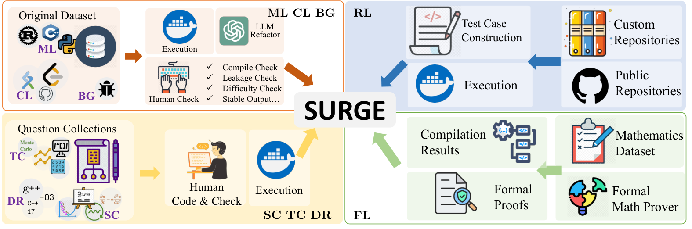

One benchmark subset contains Lean 4 proofs generated by Goedel-Prover on Lean-Workbook and labeled by Lean compiler verification; LLMs predict verification outcomes.
Abstract
Neural surrogate models are powerful and efficient tools in data mining. Meanwhile, large language models (LLMs) have demonstrated remarkable capabilities in code-related tasks, such as generation and understanding. However, an equally important yet underexplored question is whether LLMs can serve as surrogate models for code execution prediction. To systematically investigate it, we introduce SURGE, a comprehensive benchmark with $1160$ problems covering $8$ key aspects: multi-language programming tasks, competition-level programming problems, repository-level code analysis, high-cost scientific computing, time-complexity-intensive algorithms, buggy code analysis, programs dependent on specific compilers or execution environments, and formal mathematical proof verification. Through extensive analysis of $21$ open-source and proprietary LLMs, we examine scaling laws, data efficiency, and predictive accuracy. Our findings reveal important insights about the feasibility of LLMs as efficient surrogates for computational processes. The benchmark and evaluation framework are available at https://github.com/Imbernoulli/SURGE.
Problem
It is unclear whether large language models can act as general-purpose surrogate code executors, predicting program behavior without running the code.
Approach
SURGE is a benchmark of 1160 problems in eight subsets. The subsets cover multi-language code, competition problems, repository-level code, scientific computing, time-complexity-heavy algorithms, buggy code, environment-dependent programs, and formal proof verification. The formal-language subset uses Goedel-Prover to generate Lean 4 proofs on Lean-Workbook, with correctness checked by the Lean compiler; models must predict the verification result. Twenty-one open-source and proprietary LLMs are evaluated under zero-shot, chain-of-thought, and few-shot prompting.

Figure 3: The Construction of SURGE employs 4 methodologies: 1. Iterative Refactor, 2. Repository Sampling, 3. Manual Implementation, and 4. Inference & Verification.
Results
Claude-3.5-Sonnet achieves the highest zero-shot average (51.59), followed by DeepSeek-V3 (42.53) and GPT-4o (40.03). Performance varies widely across subsets, which shows substantial room for improvement in LLM-based execution prediction.
Model
FL
Avg.
Claude-3.5-Sonnet
17.92
51.59
DeepSeek-V3
32.46
42.53
GPT-4o
21.99
40.03
Qwen-Max
29.89
32.84
Zero-shot average scores on SURGE (selected models)